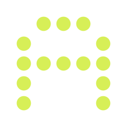

← Main Page
Live Type
⌄
Size
Line height
Align
Left
Center
Right
Background
Light
Dark
Presets
Custom
ABCDEFGHIJKLMNOPQRSTUVWXYZ
0123456789
AV VA WA To Ta Yo
El veloz murciélago hindú comía feliz cardillo y kiwi.
Descargar PNG
Tu propia tipografía · Foundry
Personal type |
Foundry Studio

Live type
BASEMENT
Scroll para desplazar · Ctrl/⌘ + scroll para zoom · Espacio + arrastre
←
→
Cerrar ×
Escape para volver · Flechas para cambiar de letra
Elegí tu trazo
×
La misma letra, distintas formas de construirla.